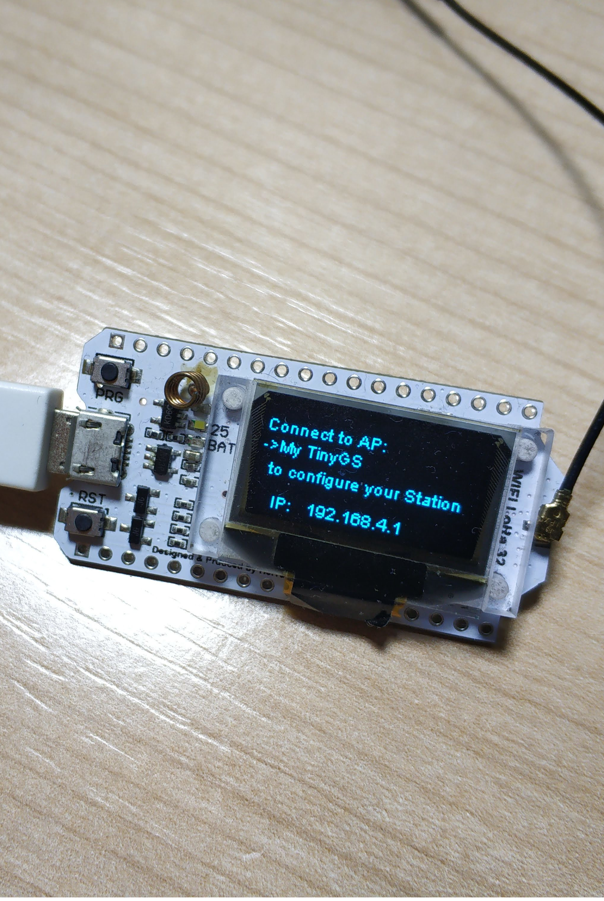
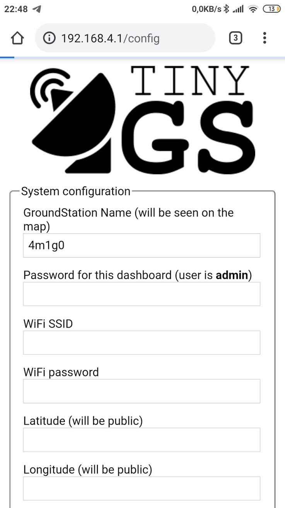

Ground Station configuration
The TinyGS firmware provides a web panel for board configuration. This makes it easy to review the state of the ground station, change any parameter and even upload a new firmware remotely. Also it ensures that configuration is kept after a new firmware version is uploaded.
The first time the board boot it will generate an AP with the name: My TinyGS. Once connected to that network you should be prompted with a web panel to configure the basic parameters of your station. If that were not the case, you can access the web panel using a web browser and going to the url 192.168.4.1.
 
The parameters that must be filled are the following:
- GROUNDSTATION NAME: The name of your ground station. You can use any name you want try to choose a name that is unique.
GROUNDSTATION PASSWORD: This is the password of your ground station, you will be asked for this password next time you connect to it through the web panel. The user is always
admin - SSID and PASSWORD: The configuration parameters of you home WiFi AP so that the ground station can connect to internet.
- TIME ZONE: Your timezone, this is to show you the time imformation in your timezone.
- LATITUDE and LONGITUDE: The geographical coordinates of the ground station. This serves the purpose of locating your ground station when you receive a package from the satellite. You can see all the stations on the TinyGS.com website.
- MQTT_SERVER and MQTT_PORT: These are the address and port of the MQTT server of the project you should not change them if you want the Ground Station to be able to connect the main server.
- MQTT_USER and MQTT_PASS: These are the credentials of the project MQTT server, the purpose is to be able to collect the most packets from the satellite and manage all groundStations from this central server. You can ask for user and password in this Telegram group: https://t.me/joinchat/DmYSElZahiJGwHX6jCzB3Q
- BOARD TYPE: The hardware board you are using. The firmware is able to autodetect your board but, in case the selection is wrong or you know what you are doing, you can change it manually by modifying this parameter.
- OLED Bright: Controls the brightness of the oled you can configure it acording to your taste. It is recommended to set a value lower than 100 to extend the life of the OLED.
- Enable TX: This parameter enables or disables the TX function. In some of the frequencies used by satellites only licensed radio operators can transmit. The station will never transmit without your intervention but if you don't have a license we recomend to disable this option to avoid triggering a tx by mistake.
- Automatic tunning: (Experimental) If this option is activated, the system will try to get the prediction from the satellites and set the radio parameters automatically to maximize the options of receiving a satellite.
- Telemetry to third party: Some of the satellite operatos, usually universities, have asked us to send the data received by the network so they have more data to study. If you disable this option, no data will be sent to third parties.
- Test Mode: This option sets your station in test mode. All the packets will be marked as test. Use this option if you are making tests for example retransmitting old packets so that the data does not count as actual data.
- Automatic Firmware Update: This option enables or disables automatic firmware updates. We recommend to leave it always enabled so your board receives always the lastest updates.
- Board template: This field provides an easy way to configure any type of board with custom pinout. Learn more about Board Templates here.
- Modem startup: This option contains the initial radio configuration for the board, this will be changed by the server but it's useful to keep the config after rebooting and to allow ofline operation.
- Avanced parameters: This option provides a set of advanced parameters mostly for developing and debugging tasks.
Current available boards
HELTEC WiFi LoRA 32 V1
This is the stock Heltec v1 LoRa board, it should be detected automatically and be selected by default if you have this board.

HELTEC WiFi LoRA 32 V2
This is the version 2 of the Heltec LoRa board, if you have this board, probably it is not detected automatically and you have to select it on the config panel manually. If you don't do so the Lora communication will not work.

TTGO LoRa 32 v1
This is the first version of the TTGO LoRa board,it should be detected automatically and be selected by default if you have this board.

TTGO LoRA 32 v2
This is the version 2 of the TTGO LoRa board, if you have this board, probably it is not detected automatically and you have to select it on the config panel manually. If you don't do so the Lora communication will not work.

T-BEAM + OLED
Warning this board is supposed to work with this configuration but it will not be automatically detected and it's not properly tested yet. If you have this board we would like to hear your experience.

Custom ESP32 Wroom + SX126x (Crystal)
This is a custom made ground station with a SX1268 module provided with a crystal oscillator (no TCXO). It is set up on a breadboard although a soldered protoboard is highly recommended if you decide to go for this type of setup. The OLED display is optional but also recommended.
Pin definition for this board is the following:
| Name | GPIO |
|---|---|
| OLED_SDA | 21 |
| OLED_SCL | 22 |
| OLED_RST | 16 |
| PROG_BUTTON | 0 |
| BOARD_LED | 25 |
| Lora_NSS | 5 |
| Lora_DI01 | 27 |
| Lora_BUSSY | 26 |
| Lora_RST | 14 |
| Lora_MISO | 19 |
| Lora_MOSI | 23 |
| Lora_SCK | 18 |

TTGO LoRa 32 V2 Modified with module SX126x (crystal)
The TTGO V2 board comes with a soldered module on board. This means that, with a little patience, the appropriate tools and some expertise, it's possible to desolder the original SX127X lora module and solder a SX126X. This configuration is meant to use a SX126X with a crystal oscillator (no TCXO).
It's also needed to use jumper cables to connect LoRa pins DIO1 to GPIO 33 and BUSSY to GPIO 32 which are not connected on the TTGO V2 but exposed as pins.
Custom ESP32 Wroom + SX126x DRF1268T (TCXO) (5, 2, 26, 13)
This is a custom made ground station with a SX1268 module provided with a TCXO. A soldered protoboard is highly recommended instead of a breadboard if you decide to go for this type of setup. The OLED display is optional but also recommended.
Pin definition for this board is the following:
| Name | GPIO |
|---|---|
| OLED_SDA | 21 |
| OLED_SCL | 22 |
| OLED_RST | 16 |
| PROG_BUTTON | 0 |
| BOARD_LED | 25 |
| Lora_NSS | 5 |
| Lora_DI01 | 2 |
| Lora_BUSSY | 13 |
| Lora_RST | 26 |
| Lora_MISO | 19 |
| Lora_MOSI | 23 |
| Lora_SCK | 18 |
Custom ESP32 Wroom + SX126x DRF1268T (TCXO) (5, 26, 14, 12)
This is the same custom board as the previous one but with different GPIO arrangement. Both are kept for compatibility reasons.
Pin definition for this board is the following:
| Name | GPIO |
|---|---|
| OLED_SDA | 21 |
| OLED_SCL | 22 |
| OLED_RST | 16 |
| PROG_BUTTON | 0 |
| BOARD_LED | 25 |
| Lora_NSS | 5 |
| Lora_DI01 | 26 |
| Lora_BUSSY | 12 |
| Lora_RST | 14 |
| Lora_MISO | 19 |
| Lora_MOSI | 23 |
| Lora_SCK | 18 |
Adding a custom board to the system
If you are planning to build your custom board, we recommend using one of the existant pin configurations. In case you already have a board with a different configuration and is not possible to change, you can add your own pin configuration using a Board Template.
We don't recommend to modify the code and instead use a board template so your configuration will be persisted after a software update. You can find more information about how to use your custom Board Template here: https://github.com/G4lile0/tinyGS/wiki/Board-templates